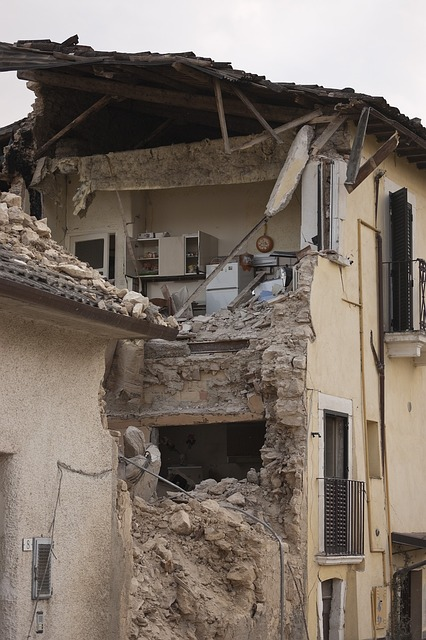

Earthquake

An earthquake is the sudden release of strain energy in the Earth's crust, resulting in waves of shaking that radiate outwards from the earthquake source.
Before an earthquake:
- Follow and advocate local safe building codes for earthquake-resistant construction.
- Make a plan and be ready for an emergency.
- Identify the medical centers, fire fighting stations and organize rescue mock drills for the society of your area.
- Know the electric and water shut off locations in your house.
- Heavy objects, glasses, cutlery should be kept on lower shelves.
During an earthquake:
- During the event, the safest place is an open space, away from buildings.
- If you are indoors, take cover under a desk, table, bed, or doorways and against inside walls and staircase. Stay away from glass doors, glass panes, windows, or outside doors. Do not rush to go out of the building, to avoid the stampede.
- If you are outside, move away from buildings and utility wires
- If you are in a moving vehicle, stop as quickly as possible and stay in the vehicle.
- ree all pets and domestic animals so that they can run outside.
After an earthquake:
- Keep stock of drinking water, foodstuff and first-aid equipment inaccessible place.
- Turn on your transistor or television to get the latest information/bulletins and aftershock warnings.
- Attend the injured persons and give them aid, whatever is possible, and also inform the hospital.
- Be prepared for aftershocks as these may strike.
- Close the valve of the kitchen gas stove, if it is on. If it is closed, do not open it. Do not use open flames.
- Do not operate electrical switches or appliances, if gas leaks are suspected.